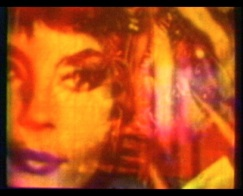
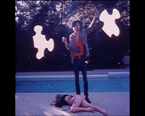
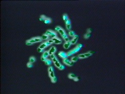
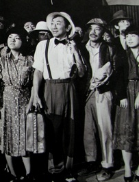
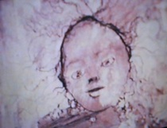
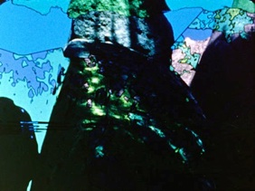

Alternative Projections: A Symposium and Film Festival


BEFORE THE SYMPOSIUM
Don’t miss our pre-symposium screenings, with films designed to complement the themes of the symposium:
Thursday October 7th, 2010, 7:00pm
USC’s Cinematheque 108
Falling Lessons by Amy Halpern (1992)
In 1975, Halpern and a handful of other filmmakers founded the Los Angeles Independent Film Oasis, devoted to presentation of avant-garde film work. Although Falling Lessons was created years after the time frame of Alternative Projections, it is, as David James writes, a “documentation of a cultural community,” referencing several filmmakers from the Oasis era and several major avant-garde works.

Sunday October 17, 2010, 7:30pm
Egyptian Theater in Hollywood
Peter Mays: Tantras and Sutras
Among some newer work being screened here, we are also including Mays’ seminal work Death of the Gorilla (1966). Gorilla, according to James, “generates a lurid surrealist melodrama of fragments of mostly horror films photographed from the television through colored filters.” Mays was an active filmmaker during the period, and also one of the key members of Single Wing Turquoise Bird. He will also be performing new work by members of the group on Saturday night.

Thursday October 28, 2010, 7:00pm
USC’s Cinematheque 108
Angel City (1975) by Jon Jost
Angel City will be discussed at length in Katherine Kerrigan’s presentation on Saturday the 13th, “Urban Landscape and Psychogeography: Jon Jost’s Los Angeles Films”. “Angel City probes the Byzantine surfaces of Los Angeles. Masked in detective-genre clothing, it self-destructs customary narrative forms to eat into the heart of Hollywood. Capitalist motivations of money, spilt blood, the diversions of fiction, the falsifications of mass media unspool into tragicomic form skittering between Dragnet and Godraub.” -- Jon Jost, from Pasadena Filmforum program notes, May 19, 1980

Sunday November 7, 2010, 7:30pm
Egyptian Theater in Hollywood
Michael Scroggins in person with video work old and new
Michael Scroggins has been a pioneer in animation performance and video art since the early 1970s. Like Peter Mays, he was also a member of the legendary light show group Single Wing Turquoise Bird, and a teacher at Cal Arts since the late 1970s. This screening will include some of Scroggins’ work from the postwar era including What Are You Looking At? (1970/1973), Destiny Edit (A linked compilation of "Lose Yr Jobs", 1972 -- "Corrigan /Lund", 1974 -- "Sangsara", 1975), and Recent Li (1980).

Wednesday November 10, 2010 7:00pm
Cinematheque 108
Hito Hata: Raise the Banner (1980)
by Robert Nakamura and Duane Kubo
Hito Hata is a major subject of Pauline Stakelon’s presentation on Saturday the 13th, “International Identities and Local Influence: The Development of Visual Communications.” Communally produced and utilizing almost all key members of Visual Communications at the time of its creation, this seminal work documenting a cultural era in LIttle Tokyo is a must-see before the symposium.
DURING THE SYMPOSIUM:
Friday November 12, 2010, 7:30 pm
The Eileen Norris Cinema Theatre
The below films were selected to complement presentations that are being held on Saturday.

The Wormwood Star by Curtis Harrington
(1956, 16mm, color, sound, 10 min)
Discussed in Alice Hutchison’s presentation: “Scarlet Woman on Film: Inauguration of the Pleasure Dome (1954) and the Wormwood Star (1956): Kenneth Anger, Curtis Harrington, Cameron, and Los Angeles alternative film and culture in the early 1950s”
Flesh of Morning by Stan Brakhage (1956, 21 min, 16mm)
Discussed in Tim Lanza’s presentation:
“Raymond Rohauer and the Society of Cinema Arts: Exhibition and Distribution 1948-1962”
Shoppers Market by John Vicario (1963, 16mm, color, sound, 22 min)
Discussed in Ken Eisenstein’s presentation:

Passion in a Seaside Slum by Bob Chatterton (1961, 28 min)
Discussed in Marc Siegel’s presentation:
“Taylor Mead, a Faggot in Venice Beach in 1961”
A Painter's Journal by Renate Druks (1967, 10 min)
Discussed in Mike Olenick’s presentation:
“The Inauguration of Renate Druks”
"Nun and Deviant by Nancy Angelo & Candace Compton Pappas (1976, video, 20 min)
Discussed in Erika Suderburg’s presentation:
“Deviant Bicentennial Redux 1976”
Sunday November 14, 2010, 3:00 pm
The Eileen Norris Cinema Theatre
The below films were selected to complement Sunday’s activities, both the presentations and the panel of filmmakers from LA Independent Oasis.
Murray and Max Talk About Money by Grahame Weinbren and Roberta Friedman (1979, 15 min)
Discussed in Carlos Kase’s presentation:
“Storm, Stress, and Structure: The Films of Roberta Friedman and Grahame Weinbren”

Sidewinders Delta, by Pat O’Neill (1976, 20 min)Discussed in Grahame Weinbren’s presentation:
“Pat O'Neill in Monument Valley”
Projection Instructions, by Morgan Fisher (1976, 4 min)
Discussion of Fisher and his work will be in the Oasis members panel directly following the screening
Gratuitous Facts, by Tom Leeser (1981, 12 min, 16mm)
Discussion of Leeser and his work will be in the Oasis members panel directly following the screening
Presence of Mind, by David Wilson (1976, 17 min)
Discussion of Wilson and his work will be in the Oasis members panel directly following the screening
Four Corners, by Diana Wilson (1978, 10min)
Discussion of Wilson and her work will be in the Oasis members panel directly following the screening
Filament (The Hands), by Amy Halpern (1975, 6 min., b/w, silent)
Discussion of Halpern and her work will be in the Oasis members panel directly following the screening
Falling Lessons (1992) by Amy Halpern
Death of the Gorilla (1965) by Peter Mays
Recent Li (1980) by Michael Scroggins
Hito Hata: Raise the Banner (1980)
by Robert Nakamura and Duane Kubo
The Wormwood Star (1956)
by Curtis Harrington
A Painter’s Journal (1967)
by Renate Druks
Sidewinders Delta (1976)
by Pat O’Neill
Los Angeles Filmforum | Site Design by Stephanie Sapienza | Contact